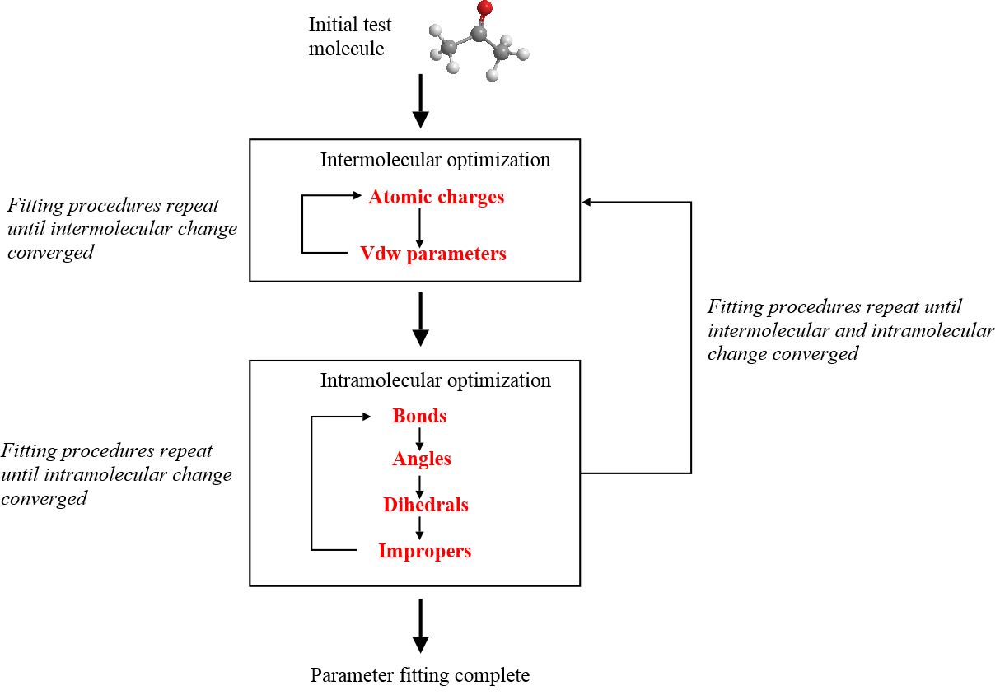

Parameter fittings¶
Recall that a molecular system behaviour is driven by the force field which consists of a set of mathematical (potential) functions that represent the various interaction components of the atoms in molecules. This section will give you a rough idea how parameters of these functions are adjusted, or tuned, to model different chemical behaviour of atoms.

In a nutshell, the goal of fitting parameters is to develop a FF model that reproduces experimental measurements to as close as possible. If the experimental measurement is not available, then quantum mechanical (QM) data will be used. In general, the parameter fitting strategy is achieved via a combination of scientific and chemical intuitive approaches. Many in fact regard parameter fitting execercies as an arti!
Diagram below shows a summary of a fitting procedure. The paramaters are fitted in cyclic steps until the energies or calculations (with respect to a chosen standard such as experiments) are converged to within a tolerence limit, tweaking the parameters along the way.
{kind=link}
Note
Similar to atom typing, there is no universal protocol to follow how potential parameters would be derived or fitted. Each FF scheme uses different levels of theories, techniques and procedures to obtain these numbers that approximately represent the behaviour of the molecules.
The tolerence limits can be arbitrary. For instance, deviation of bond lengths (between the experiments and calculations) to within, say 0.01 angstrom; deviation of bond angle to within 2 degrees, etc.
Since there are so many parameters would need to be optimised, in practice, the following approaches are taken to reduce the burden and scope of fittings:
- some of the parameters were held fixed (perhaps predetermined from a smaller dataset) so as to fit other parameters over a larger dataset.
- assign same parameter sets to atoms with the same bond orders or hybridised orbitals.
- limit the scope of fittings to a certain class of molecules, which only consist of certain number of elements.
- for vdw parameters, use of vdw mixing rules to obtain vdw parameters between different atom types.
Furthermore, it is more tractable to carry out fitting procedures in stepwise fashions, as shown above. Also, the quality of the FF scheme is generally improved if the parameters were fitted to a large number of test molecules.
Note
Usually, different atom types would have different sets of parameters, reflecting different chamical behaviour of atoms. Larger number of atom types for a smaller set of elements would also improve accuracy of the FF for molecules that contain these elements. However, larger number of atom types also means more parameters would need to be optimised, and increases the FF library size.
Below shows a summary of the class of materials and some of the measurements to which the parameters can be fitted to.
Pure solvents: heats of vaporisation, molecular volumes, heat capacities.
Aqueous: free energy of solvation, partial molar volumes.
Crystals: heats of sublimation, lattice parameters.
Force constants: IR, Raman spectra, ab initio QM.
Torsional surfaces: Microwave, NMR spectroscopies, ab initio QM scan.
Depends on the purposes of a FF scheme, a FF designer may only emphasise a subset of measurements and materials for fittings.
Note
The scope of FF applicability depends on the classes of materials and their phases to which they were fitted to. This is why sometimes a software package will report missing parameters if the structure has a chemical space that is beyond the scope of the FF scheme.